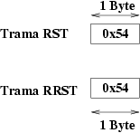
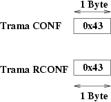
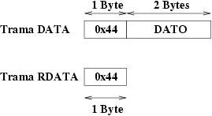
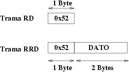
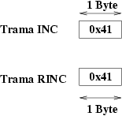
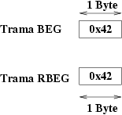

| Servidor PICP: servicios específicos |
El cliente envía la trama RST. El servidor realiza el reset y devuelve la trama RRST.

El byte de identificación de trama se corresponde con la letra 'T'.
Ejemplo: Queremos hacer un reset. El cliente del PC envía la trama RST:
Trama enviada: 0x54
Trama recibida: 0x54
El cliente envía la trama CONF. El servidor accede al servicio load configuration del monitor del pic y devuelve la trama RCONF.

El byte de identificación de trama se corresponde con la letra 'C'.
Ejemplo: Acceso al servicio Load Configuration: El cliente del PC envía la trama CONF:
Trama enviada: 0x43
Trama recibida: 0x43
El cliente envía la trama DATA, que contiene el dato de 14 bits a enviar. Como se envían 2 bytes (16 bits), los 2 bits más significativos se ignoran. Primero se envía el byte bajo y luego el alto. El servidor envía el dato al pic y devuelve la trama RDATA.

El byte de identificación de trama se corresponde con la letra 'D'.
Ejemplo: Envío del dato 0x01C8
Trama enviada: 0x44 0xC8 0x01
Trama recibida: 0x44
El cliente envía la trama RD. El servidor accede al pic, a la dirección actual del contador de programa (PC) y devuelve la trama RRD, que contiene la palabra de 14 bits leída. Del dato de 2 bytes (16 bits) recibidos, los 2 bits más significativos se ignoran. Primero se recibe el byte bajo y luego el alto.

El byte de identificación de trama se corresponde con la letra 'R'.
Ejemplo: Lectura de la palabra apuntada por el contador de programa (Ejemplo: se recibe la palabra 0x02fe):
Trama enviada: 0x52
Trama recibida: 0x52 0xfe 0x02
El cliente envía la trama INC. El servidor accede al servicio increment address del monitor del PIC con lo que se incrementa el contador de programa (PC=PC+1). El servidor devuelve la trama RINC.

El byte de identificación de trama se corresponde con la letra 'A'.
Ejemplo: Acceder a la siguiente posición de memoria.
Trama enviada: 0x41
Trama recibida: 0x41
El cliente envía la trama BEG. El servidor accede al servicio Begin Erase/Programming Cycle del monitor del PIC, con lo que se graba la información previamente enviada con la trama DATA. El servidor devuelve la trama RBEG.

El byte de identificación de trama se corresponde con la letra 'B'.
Ejemplo: Comenzar un ciclo de borrado/programación de la dirección actual:
Trama enviada: 0x42
Trama recibida: 0x42